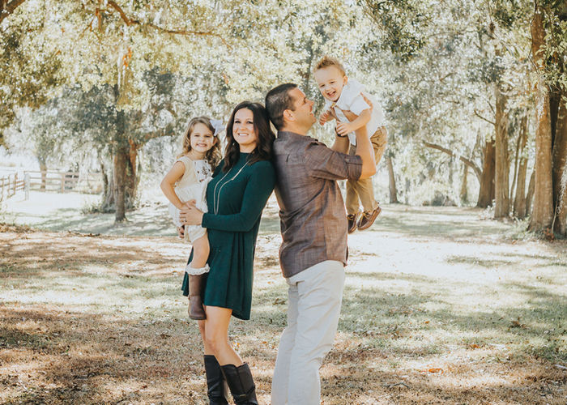
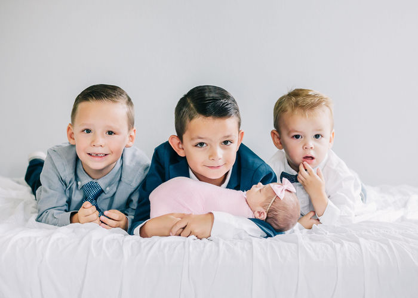
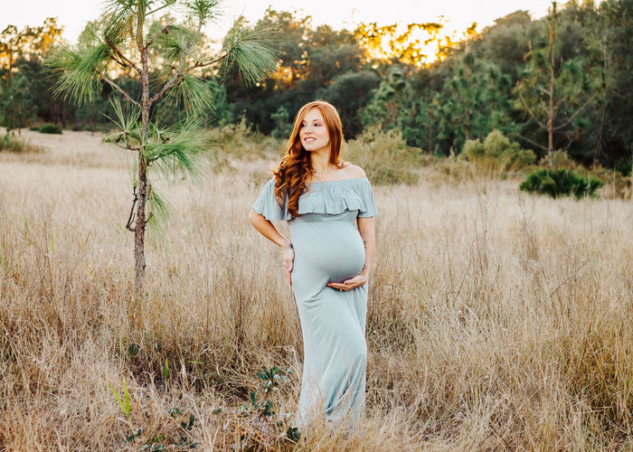

Clermont, Florida · Preserving the moments that matter most


Katelyn volunteers with Preemie Prints, providing complimentary portrait sessions to families in the NICU. Because every baby's arrival — no matter how early — deserves to be remembered.
Volunteer Photographer
These fleeting moments — a tiny hand, a sleeping face — are gone so fast. I'm here to make sure you never forget them.
Based in Clermont, Florida, Katelyn Michelle specializes in newborn, maternity, and family photography. Known for warm, gentle imagery and genuine care for every family she photographs, Katelyn also volunteers with the Preemie Prints NICU program — offering complimentary sessions to families in hospital intensive care units.
Newborn · Maternity · Family · NICU
Book Your Session